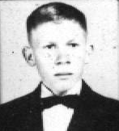 |
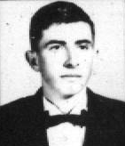 |
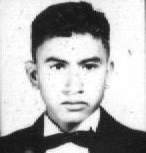 |
AMAURI DENEGA |
CELSO DENARDI |
CÂNDIDO J. M. LADISLAU |
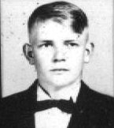 |
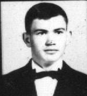 |
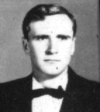 |
ELOI KOHLER |
JOÃO CARLOS LOSS |
LORIDES PIANA |
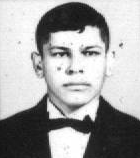 |
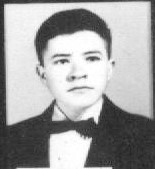 |
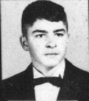 |
MOACIR R. GALVÃO |
NILCEU C. DE OLIVEIRA |
REINALDO ROCHA MARTINS |
| 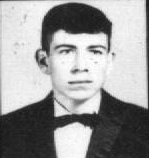 | ||
SEBASTIÃO L. FERREIRA |
||
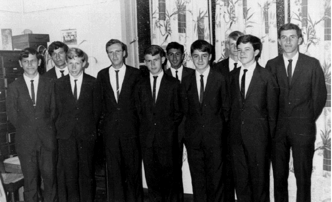
Moacir Galvão, Sebastião Ferreira, Amauri Denega, Lorides Piana, João Loss, Cândido
Ladislau, Reinaldo, Eloy Kohler, Nilceu de Oliveira e Celso Denardi